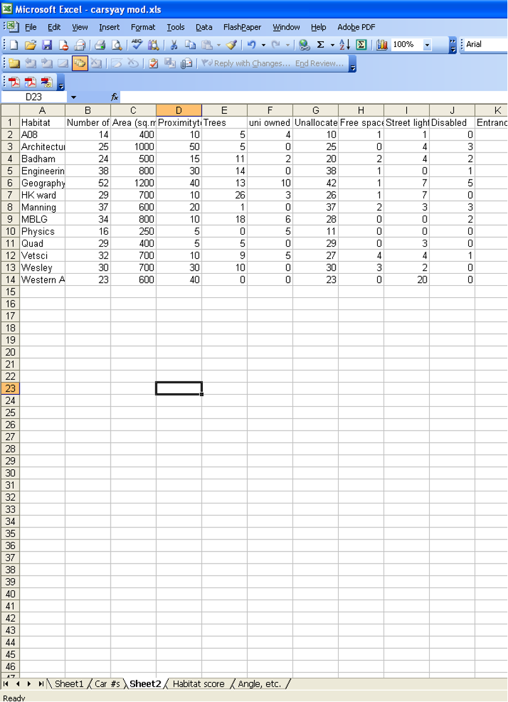
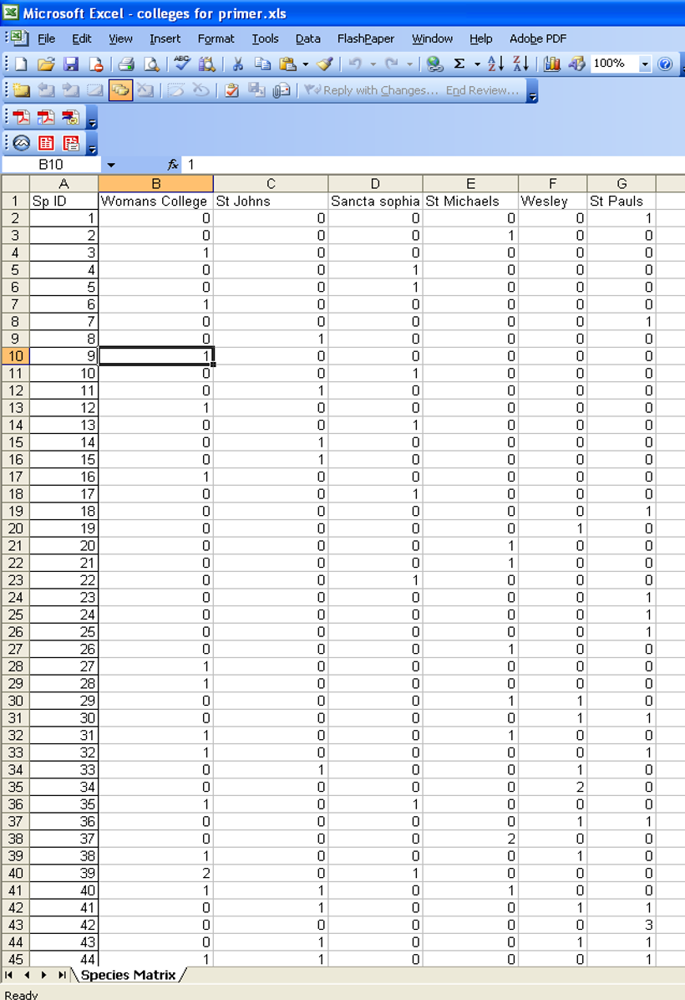

Week 10: Analysing Community Patterns
By the end of this practical, you’ll be able to:
- Visualise complex ecological data in ways that reveal hidden patterns
- Test hypotheses about differences between communities (like comparing forest vs grassland)
- Identify which species are driving the differences you find
- Use professional software (PRIMER or R) that ecologists use in real research
📋 Today’s Tasks
- Present your experimental design (10 minutes)
- Practise multivariate analyses using sample data
- Learn three powerful statistical tools: PERMANOVA, SIMPER, and nMDS
By Next Week You Need:
Three properly formatted spreadsheets (worth 5 marks) - details at the bottom of this page ⬇️
🗺️ The Big Picture: What Are We Doing?
Think of your ecological data as a puzzle. You’ve counted species at different sites, but how do you make sense of it all?
Today you’ll learn to:
- See patterns → Using ordination plots (nMDS) to visualise which sites are similar
- Test differences → Using statistics (PERMANOVA/ANOSIM) to prove groups are different
- Find causes → Using SIMPER to identify which species make sites different
This looks like a lot, but you’ll work through it step by step. The software does the heavy lifting—you just need to understand what to click and what the results mean.
📚 Understanding the Methods (Read This First!)
Before diving into button-clicking, let’s understand what these tools actually do. Don’t memorise everything—just get the gist, then refer back when needed.
The Three Tools in Your Toolkit
🔵 nMDS
“The Mapper”
Creates a visual map showing which sites have similar communities
🟢 PERMANOVA
“The Tester”
Tests if groups are genuinely different (not just by chance)
🟠SIMPER
“The Detective”
Reveals which species are responsible for the differences
🔵 nMDS: Making Sense of Messy Data
nMDS = Non-metric Multi-Dimensional Scaling
In plain English: Imagine you have 50 species at 20 sites. That’s too much information to visualise! nMDS squashes all that complexity into a simple 2D plot where:
- Close together = sites have similar species
- Far apart = sites have very different species
Think of it like a map: sites in the same forest will cluster together, while grassland sites form their own cluster.
You don’t need to understand the maths—just know how to read the plot!
🟢 PERMANOVA vs ANOSIM: Testing for Differences
Use PERMANOVA if: - You have multiple factors (e.g., habitat × season) - Your design is complex (interactions, nested factors) - You want the most flexible, powerful option ✅
Use ANOSIM if: - You have one simple factor (e.g., just comparing habitats) - You prefer a simpler alternative - Your demonstrator recommends it
💡 In most cases, use PERMANOVA—it’s the modern standard.
PERMANOVA = Permutational Multivariate Analysis of Variance
In plain English: It’s like an ANOVA, but for community data. It asks:
“Are the communities in Group A genuinely different from Group B, or could this pattern have happened by random chance?”
It works by: 1. Calculating how different sites are (using distance measures like Bray-Curtis) 2. Shuffling group labels thousands of times (999 permutations) 3. Seeing if your real groups are more different than the random shuffles
If P < 0.05 → Groups ARE significantly different
If P > 0.05 → No convincing evidence of difference
🟠SIMPER: Finding the Culprits
SIMPER = Similarity Percentages
In plain English: After PERMANOVA tells you “yes, these groups are different”, SIMPER tells you WHY.
It identifies which species contribute most to the differences. For example:
- Forest sites have lots of Species A (75% contribution to difference)
- Grassland sites have lots of Species B (15% contribution)
- Species C is everywhere (5% contribution—not very useful!)
Use SIMPER ONLY after you’ve found a significant difference with PERMANOVA/ANOSIM.
🔨 The Analysis Workflow
Here’s the roadmap for analysing community data:
1. Transform your data (reduce dominance of common species)
↓
2. Calculate similarity matrix (Bray-Curtis)
↓
3. Create nMDS plot (visualise patterns)
↓
4. Run PERMANOVA (test for differences)
↓
5. If significant → Run SIMPER (identify key species)
↓
6. Interpret & report!💻 Step-by-Step: Using PRIMER 7
If you prefer R over PRIMER, detailed R Studio files are available on Canvas. The concepts are the same—just different buttons!
Before You Start: Understanding Data Transformation
Ecological data is messy. You might have: - 1 super common species (e.g., 500 individuals) - 20 rare species (1-2 individuals each)
Without transformation, the common species dominates everything and drowns out patterns from rarer species.
Common transformations: - 4th root → Good for abundance data with big numbers - Log(x+1) → Good for moderate ranges
- Presence/absence → Ignore abundance, just note if species is there
💡 PRIMER won’t let you proceed without transforming—it’s protecting you from bad analyses!
📊 Step 1: Open Your Data
🏷️ Step 2: Add Factors (Labels for Your Groups)
🔄 Step 3: Transform the Data
🗺️ Step 4: Create an nMDS Plot
- Closer points = more similar communities
- Look for clusters—do your treatment groups separate?
- Stress value (shown on plot):
- < 0.1 = Excellent representation
- 0.1–0.2 = Good
- > 0.2 = Treat with caution
- < 0.1 = Excellent representation
🧪 Step 5: Run PERMANOVA (Test for Differences)
If your PERMANOVA shows P < 0.05 but you have 3+ groups (e.g., Forest, Grassland, Desert), you need pairwise comparisons to see which pairs differ:
- Re-run PERMANOVA
- Select Pair-wise test
- Choose your factor
- Click OK
This shows you: Forest vs Grassland (P = 0.003), Forest vs Desert (P = 0.021), etc.
🔠Step 6: Run SIMPER (Find Key Species)
There’s no point identifying “key species†if groups aren’t actually different.
💾 Step 7: Save Your Work!
Don’t forget to save! PRIMER can crash, and you’ll lose everything.
- Go to File → Save As
- Export plots as images (right-click → Export)
- Copy-paste tables into Word/Excel
🔄 Alternative: ANOSIM (Simpler Test)
ANOSIM is a simpler alternative to PERMANOVA for one-factor designs only.
Running ANOSIM:
- Return to your Resemblance Matrix
- Go to Analyse → ANOSIM
- Select your factor
- Click OK
Reading Results:
- Look for the Global R value and Significance level
- Convert significance to P-value: Divide by 100
(e.g., 0.2% → 0.2 ÷ 100 = P = 0.002) - Global R interpretation:
- R close to 1 → Strong separation between groups
- R close to 0 → Little/no separation
Reporting ANOSIM:
Write: “Global R = 0.148, P = 0.076, 999 permutations”
⚠ ï¸ Only interpret pairwise tests if the Global Test is significant!
📠Homework: Prepare Your Data Files (5 Marks)
Your demonstrator will check and mark these three spreadsheets. Get them right!
File 1: Habitat Data for PCA (Jamovi/R)
Format: Sites in ROWS, variables in COLUMNSFile 2: Community Data for PRIMER
Format: Species in ROWS, sites in COLUMNSFile 3: Summary Statistics
Example Images (For Reference)
Habitat Data (Jamovi format):

Community Data (PRIMER format):

Notice: Top-left cell is blank in the PRIMER example!
❓ Common Questions
No! For next week’s analysis, try 2-3 different transformations and see how they affect your results. Common choices: - 4th root (most common) - Log(x+1)
- Presence/absence (if you suspect rare species are important)
Document which you used and why.
That’s fine! Both test similar hypotheses. ANOSIM is simpler but less flexible. Follow your demonstrator’s preference.
Yes, but document it! You can: - Delete species found at only 1 site (singletons) - Group rare species by genus or family - Keep everything (but transformation will help)
Explain your choice in your report.
- < 0.1 = Excellent—trust the plot!
- 0.1–0.2 = Good—patterns are reliable
- > 0.2 = Poor—treat with caution, patterns might be misleading
If stress > 0.2, try more restarts or consider if your data is suitable for nMDS.
📋 Quick Reference: Analysis Checklist
Before leaving the practical, make sure you’ve completed:
🆘 Need Help?
- During practical: Ask your demonstrator!
- Software issues: Check Canvas for R alternatives or PRIMER tutorials
- Conceptual confusion: Re-read the collapsed “What is…†sections above
- Data formatting: Look at the example images or ask for template files
Remember: Everyone finds this challenging at first. The software does the complicated maths—you just need to understand what the results mean! 🎓
Community structure/Assemblage structure
The process for looking at community structure is straight forward. We will use both cluster analysis and nMDS/ANOSIM/SIMPER to do this. This involves;
- Transforming/standardising your data as appropriate.
- Calculating Bray Curtis dissimilarities (you could use something else from BC if the data are suitable) and generating dissimilarity matrix.
- Performing MDS (and follow on below).
- PERMANOVA (or ANOSIM) to test for difference between treatments.
- SIMPER for identifying which variables contribute to the differences.
Using PRIMER 7 (R instructions are given on Canvas within an R Studio files)
PERMANOVA, SIMPER and MDS analysis with PRIMER
1. Open your data
- Open the Excel file containing your data.
- Launch PRIMER 7.
- In PRIMER, go to File → Open, then choose your Excel file.
- Select the correct worksheet to analyse.
- Ensure “Data Type†is set to Sample data.
- Clear the “Title†button (unless you want a header included).
- Check that your data has the expected number of rows (samples) and columns (species/variables) and looks correct.
2. Add factors
- Go to Edit → Factors → Add.
- Give each factor a clear, meaningful name (e.g., “Habitat”, “Season”).
- Code each sample/site with its appropriate level for the factor (e.g., “Forest†or “Grassland”).
- Press OK to save the factor.
3. Transform the data (if needed)
- Go to Pre-treatment → Transform (overall).
- Choose a transformation appropriate for your data:
- Use 4th root for abundance/biomass data with large values.
- Use Presence/absence if you’re only interested in species occurrence.
- Press OK to apply the transformation.
Create an nMDS Plot
- Go to Analyse → Resemblance.
- Select “Analyse between samples†and choose Bray-Curtis similarity.
- Click OK to generate the resemblance matrix.
- Then go to Analyse → Non-metric MDS.
- Change the number of restarts to 20.
- Tick Configuration Plot, then click OK.
- You can adjust the appearance of the nMDS by right-clicking on the plot.
Run a PERMANOVA
A. Create the PERMANOVA Design
- Return to the Resemblance Matrix.
- Go to PERMANOVA+ → Create PERMANOVA Design.
- Enter a name for your design.
- Add the number of factors you want to test (e.g., “Habitat”, “Season”).
- For each factor:
- Enter its name,
- Choose Fixed or Random as appropriate.
- Press OK to create the design.
B. Run the PERMANOVA
- Go to PERMANOVA+ → PERMANOVA.
- Select your newly created design (choose the one with the highest number if unsure).
- In the test options:
- Choose Main test,
- Use Reduced model for permutation type,
- Use Type III sum of squares,
- Set Number of permutations to 999.
- Click OK to run the test.
- Interpret the output: If a factor is significant (p < 0.05), it suggests group differences.
Pairwise Comparisons (if needed)
- If your PERMANOVA shows significant effects, re-run it:
- Select Pair-wise test,
- Choose the factor or interaction you want to explore in detail.
- Click OK.
Run a SIMPER Analysis
- Return to the Transformed dataset.
- Go to Analyse → SIMPER.
- Select the factor you’re interested in (e.g., “Habitat”).
- Click OK.
- SIMPER identifies which species contribute most to the differences between groups.
Save Your Work
Save your results and graphs by going to File → Save As, or by exporting figures and tables as needed.
When analysing your group data in Week 11, you will have the option to apply different transformations to your dataset. It’s a good idea to try several transformations (e.g., 4th root, log(x+1), presence/absence) to explore how they influence your results and interpretations.
Important: PRIMER may not allow you to proceed with certain analyses—such as resemblance or ordination—if the data are not transformed. This is because untransformed ecological data often contain extreme values that can distort multivariate analyses.
So, always consider applying an appropriate transformation before moving on to steps like Bray-Curtis similarity, nMDS, PERMANOVA, or SIMPER.
ANOSIM – Analysis of Similarities
ANOSIM is a non-parametric test used to assess whether there are significant differences between groups of samples. It is an alternative to PERMANOVA, but with some key differences:
- ANOSIM is best suited for simple, one-factor analyses (e.g., comparing habitats or treatments with one grouping variable).
- PERMANOVA is more flexible and appropriate for multi-factorial designs (e.g., habitat × season).
- For one-factor designs, ANOSIM and PERMANOVA typically produce similar results.
Running ANOSIM in PRIMER
- Return to the Resemblance Matrix (you must have already created this using Bray-Curtis or another similarity measure).
- Go to Analyse → ANOSIM.
- Select the factor you added earlier (e.g., “Treatment†or “Habitat”).
- Click OK to run the analysis.
Interpreting the ANOSIM Output
- The key result is the Global Test section, which gives you:
- Global R value (effect size)
- Significance level (in %), which is your p-value × 100
- Global R value (effect size)
To get the p-value, divide the significance level by 100:
For example, if the significance level is 0.2%, then:
0.2 ÷ 100 = 0.002 → P = 0.002, which is statistically significant (P < 0.05).
- If the Significance level is greater than 5% (i.e., P > 0.05), then there is no significant difference between groups, even if pairwise comparisons appear significant.
- ANOSIM results are typically reported like this:
(Global R = 0.148, P = 0.076, 999 permutations)
Important Notes
- A high Global R (close to 1) indicates strong separation between groups; values near 0 suggest little or no separation.
- Only interpret Pairwise Tests if the Global Test is significant.
- Always report the number of permutations used (usually 999 by default).
What You Need to Prepare
- By the start of next week’s practical, each group must have three Excel spreadsheets prepared. These will be checked and marked out of 5 by your demonstrators.
- 1. Habitat Data File
- Format for Jamovi or R
- Rows = sites, Columns = habitat variables (e.g., canopy cover, soil moisture, temperature)
- Ensure variable names are clear and units are consistent
- Format for Jamovi or R
- 2. Assemblage / Community Data File
- Format for PRIMER or R
- Rows = species IDs, Columns = sites
- Each cell should contain abundance or presence/absence data for each species at each site
- Format for PRIMER or R
- 3. Summary Statistics File
- Additional spreadsheets based on Files 1 and 2, but with calculated summaries
- Include statistics such as:
- Number of species per site or treatment
- Total individuals
- Mean or median values of habitat variables
- Number of species per site or treatment
- These can be summarised by site or by treatment, depending on your research question
- Additional spreadsheets based on Files 1 and 2, but with calculated summaries
Preparing Data for PCA, Community Analysis, and Summary Statistics
Next week’s practical sessions will involve working with your collected data in Jamovi, PRIMER, and Excel. Below are step-by-step instructions to help you get your data in the right format.
1. Habitat Data for PCA (Jamovi or R)
You will need to enter your habitat data into Jamovi or R for Principal Components Analysis (PCA).
- Each site must have its own row.
- Each habitat variable (e.g., temperature, soil moisture, canopy cover) should have its own column.
- Include a “Site Name†column.
- If your project includes treatments (e.g., burned vs unburned), include a “Treatment†column.
- Ensure all measurements are in consistent units, and check for any missing data.
Jamovi Tip: Once imported, make sure your variables are recognised as numeric (ruler icon), not text.
2. Assemblage / Community Data for PRIMER
You will also need to prepare your species data for multivariate analysis in PRIMER.
- Create a species × site matrix:
- Rows = species
- Columns = sites
- Cell values = abundance (or presence/absence)
- Rows = species
- The top-left cell of the spreadsheet must be blank (PRIMER requires this).
- Use a single header row with column labels (site names), and no extra rows or merged cells.
- Species names can be replaced with unique codes (e.g., A, B, C), but you must keep a separate reference file that maps these codes to their full species names (e.g., A = Toyota Corolla, B = Leyland P76).
3. Summary Statistics for Additional (Univariate) Analyses
To support univariate analyses (e.g., total species per site, total abundance), prepare a separate summary spreadsheet:
🔧 Steps:
- Make a copy of your completed species × site matrix.
- In a new column at the far right, use Excel formulas (e.g., =SUM(…)) to calculate the total abundance per species (i.e., row totals).
- Select the entire dataset (very important!) and sort by this new column.
- Delete rows with a total of zero (species not present in any site).
- You may consider grouping rare species or singletons into coarser taxonomic levels (e.g., genus or family), if appropriate for your analysis.
Using Pivot Tables to Calculate Summary Statistics
Pivot tables in Excel can help you quickly calculate total counts or presence/absence summaries across sites.
To create a Pivot Table:
- Highlight the dataset you want to use.
- Go to the Data tab → select Pivot Table.
- Choose to place the table in a new worksheet.
- Drag the species into the Rows field, and sites into the Columns field.
- Choose between:
- Sum → for abundance data
- Count → for presence/absence data
- Sum → for abundance data
If you’re unsure about your file format or need a template, ask your demonstrator for help or examples.
Let me know if you’d like template Excel sheets or sample Jamovi/PRIMER files to distribute.